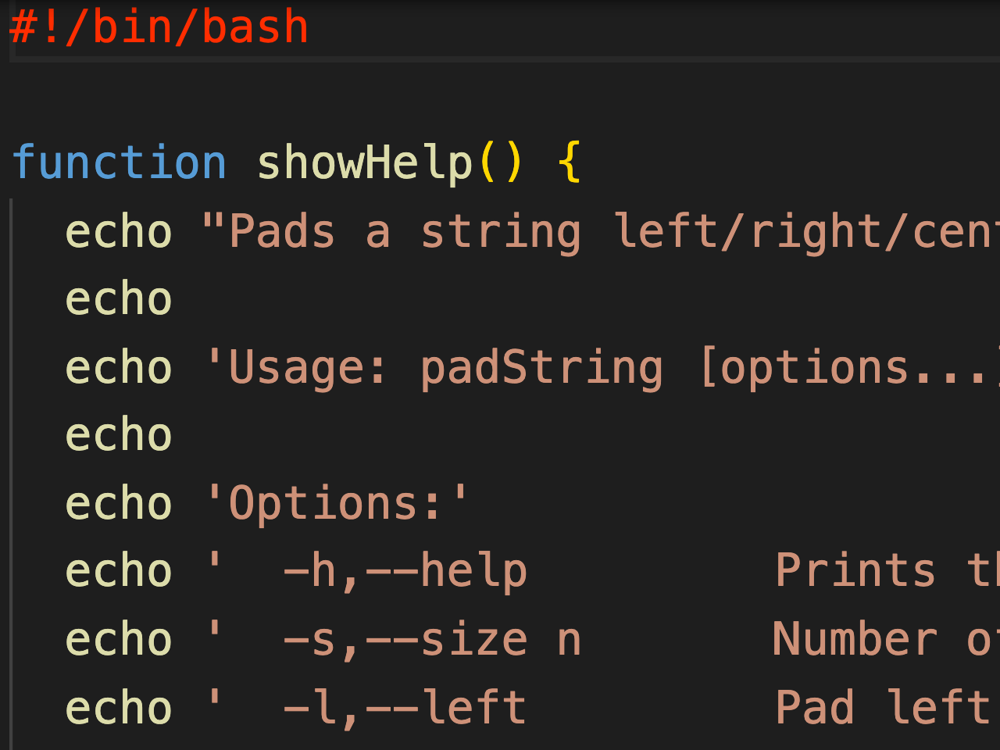
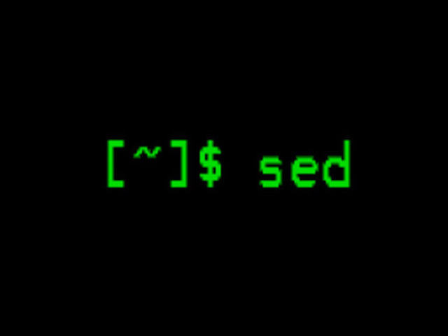
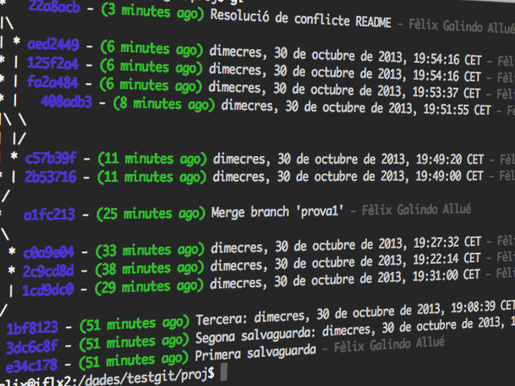
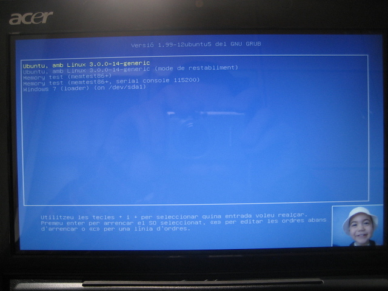
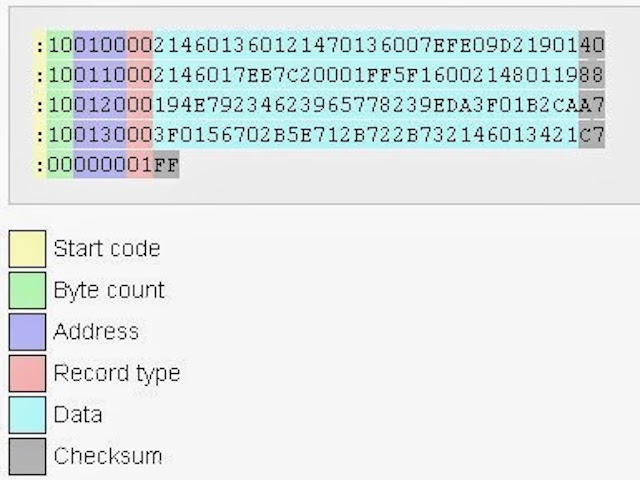
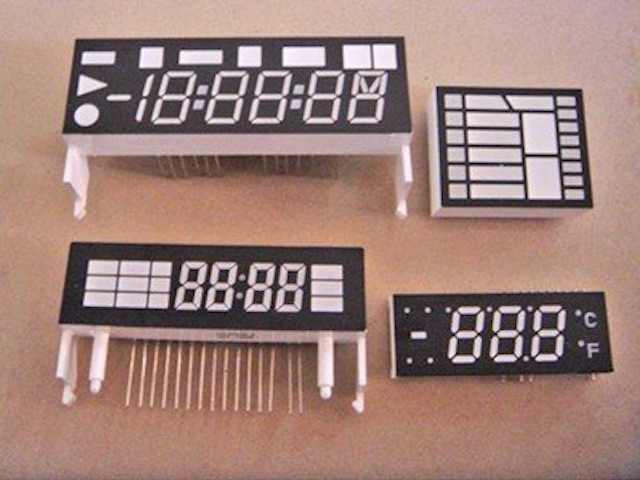

flx.cat
Inici
Quant a…
Categories
Tot
(19)
Electrònica
(2)
Grub
(1)
Intel HEX format
(1)
LED
(1)
Linux
(5)
Llibres
(1)
Oracle
(1)
PIC
(1)
SQL
(1)
Ubuntu
(1)
alfanumèric
(1)
assemblador
(1)
bases de dades
(10)
basex
(2)
charlieplexing
(1)
compilació
(1)
criteria
(1)
criteriabuilder
(3)
criteriaquery
(1)
db4o
(3)
desenvolupament
(1)
developing
(2)
featured
(3)
flash
(1)
git
(1)
github
(1)
gitlab
(1)
hibernate
(4)
hql
(1)
java
(6)
jaxb
(3)
jdbc
(6)
jekyll
(2)
jpa
(4)
jpql
(3)
latex
(1)
lipsum
(1)
liquid tags
(2)
memòria
(1)
microcontrolador
(2)
microprocessador
(2)
multiplexació
(1)
mysql
(6)
oodbms
(4)
oracle
(1)
ordbms
(4)
pic
(1)
plugin
(2)
programació
(1)
qbe
(1)
rdbms
(6)
relé
(1)
ruby
(2)
script
(1)
sed
(1)
shell
(1)
soda
(3)
sortida
(1)
stax
(3)
transistor
(1)
xnd
(4)
xpath
(4)
xquery
(4)
Ordena per
Defecte
Títol
Data - Més antic
Data - Més nou

Arguments i modificadors en shell-scripts
Recull de bones pràctiques en la construcció de
shell-scripts
amb uns exemples d’ús on es volen arguments, modificadors amb i sense arguments, així com variants de modificadors amb nom llarg i nom curt. Es tracta d’un punt de partida en la construcció de
shell scripts
de qualitat.
1 d’abr. 2021
6 min

Bucles en un sed
Experiència interessant amb
sed
on descobreixo que els bucles sí que són permesos i com usar-los
4 de des. 2013
2 min

Guia ràpida de Git
Funcionalitats bàsiques de Git explicats i demostrats amb exemples senzills
11 de nov. 2013
22 min
Liquid-LaTeX Jekyll Plugin
Another Jekyll plugin. This one renders and inserts arbitrary LaTeX content on your posts
10 de nov. 2013
6 min
Liquid-Lipsum Jekyll Plugin
My first Jekyll plugin. It inserts random text inside your posts
9 de nov. 2013
3 min
XND, BaseX i Java
Darrera part del curs
Curs BBDD i Java
centrada en la connexió de Java amb un sistema de bases de dades natives XND. En concret, s’estudiarà la connexió BaseX - Java a través de diferents mètodes de connexió.
3 de jul. 2013
25 min
XND - XPath i XQuery
Penúltima part del curs
Curs BBDD i Java
centrada en la construcció de consultes mitjançant XPath/XQuery.
3 de jul. 2013
28 min
OODBMS amb db4o i Java
Setena part del curs
Curs BBDD i Java
centrada la programació d’aplicacions que utilitzin una base de dades orientada a objectes com db4o per a poder emmagatzemar objectes directament en un magatzem especialitzat d’objectes.
2 de jul. 2013
7 min
Hibernate i JPA
Sisena part del curs
Curs BBDD i Java
centrada en la millora de les tècniques presentades en el punt anterior. En concret s’estudia el component de Java de persistència JPA i com podem combinar-lo amb tècniques vistes fins ara.
1 de jul. 2013
5 min
Hibernate i el mapatge objecte-relacional
Cinquena part del curs
Curs BBDD i Java
on s’analitzarà com realitzar mapatge objecte-relacional entre objectes d’un llenguatge orientat a objectes d’alt nivell (Java) amb bases de dades relacionals tradicionals i les tècniques associades per a l’extracció i inserció de dades en aquests casos.
1 de jul. 2013
19 min
JDBC amb SQL
Segona part del curs
Curs BBDD i Java
centrada en la connexió d’un llenguatge d’alt nivell com Java amb un motor de bases de dades a través de connectors JDBC per a l’extracció i inserció de dades en bases de dades relacionals i amb l’execució de sentències SQL tradicionals.
29 de juny 2013
17 min
Tipus de bases de dades - discusió i ús
Primera part del curs
Curs BBDD i Java
on analitzem les diferents formes d’emmagatzemar dades i com fer-les disponible per als programes que desenvolupem amb llenguatges d’alt nivell.
29 de juny 2013
4 min
ORDBMS amb Oracle
Tercera part del curs
Curs BBDD i Java
centrada en l’anàlisi de la programació de bases de dades objecte-relacionals amb Oracle.
29 de juny 2013
1 min
XML i Java amb StaX i JAXB
Quarta part del curs
Curs BBDD i Java
centrada en el mapatge d’arxius XML amb objectes de Java. Aquesta tècnica minimitza la separació entre el magatzem de dades i el llenguatge d’alt nivell, fent que la informació s’integri millor en el cicle de vida de l’aplicació.
29 de juny 2013
16 min
Curs BBDD i Java (índex)
Pàgina principal del curs
Curs BBDD i Java
que vaig impartir a professors del centre d’estudis Stucom en el marc de formació interna del professorat. L’objectiu d’aquest curs és adquirir coneixements en tècniques avançades de programació Java per a la l’accés a dades en magatzems d’informació diversos.
10 de maig 2013
2 min

Creating a new Grub2 background image (menu only) in Ubuntu >11.10
This little post explains how to configure a background image to the Grub boot menu used in many Linux distributions.
22 d’abr. 2013
3 min
Oracle SQL és fàcil!
Detalls del meu llibre sobre Oracle SQL publicat amb Bubok
19 de jul. 2012
2 min

Format Intel HEX
En aquest article es parla sobre el format Intel Hex, que és l’utilitzat pels compiladors i assembladors que treballen sobre dispositius de memòria (inclosa la memòria Flash dels PIC, per exemple).
17 de nov. 2010
8 min

Elements de sortida electrònics (I)
Es tracten els diferents elements disponibles per a realitzar la sortida de dades en un circuit electrònic. S’estudien els LEDs (amb i sense transistor), el relé, i multitud d’elements LED en diferents estructures.
22 d’oct. 2010
25 min
Cap element coincident